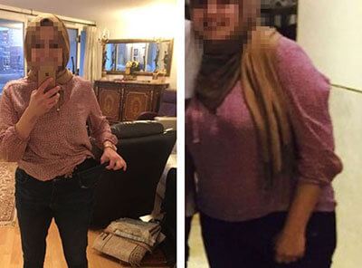

وزارة الصحة: حل مبتكر لفقدان الوزن. افقد 15 كجم في 4 أسابيع بدون مواد كيميائية أو صيام أو تمارين.

يعقوب خلفان، اختصاصي تغذية معتمد
تعتبر الأنظمة الغذائية والتمارين الرياضية وشفط الدهون من الطرق الرئيسية لمكافحة السمنة. لكن هل هي فعالة للغاية عندما يتزايد عدد الأشخاص الذين يعانون من السمنة كل عام؟ مشروب غير قواعد اللعبة. إنه يسرع عملية الكيتونيه، تجويع الكربوهيدرات حيث يتم فقدان الوزن الزائد 3 مرات أسرع. مع ذلك، ستختفي الدهون من الخصر والفخذين!
يعقوب خلفان
مدير مركز علوم التغذية، أخصائي تغذية
الخبرة المهنية - 42 سنة
ما هي ؟
إذا كان جسمك يفتقر إلى فيتامين سي، فأنت تأكل البرتقال. إذا كان يفتقر إلى الفوسفور، فأنت تأكل السمك. إذا كان جسمك بحاجة إلى المزيد من الكالسيوم، فسيتعين عليك تناول البروكلي ومنتجات الألبان. نفس الشيء يعمل على فقدان الوزن. نكتسب الوزن إذا كانت أجسامنا تفتقر إلى العناصر الدقيقة المهمة. تحتوي تركيبة على الفيتامينات والعناصر التي نحتاجها للحفاظ على الصحة وحرق الدهون بسرعة. تساعد على التحكم في الشهية وتناول الطعام عن طريق تحفيز إنتاج الخميرة التي تكبح الرغبة الشديدة في تناول الطعام غير الصحي.
نظام كيتو الغذائي هو نهج فريد من نوعه لفقدان الوزن يعتمد على التحكم الصارم في عدد الكربوهيدرات المستهلكة. ويمكن ملاحظة تأثير أحجام حصص الكيتو على الجسم بعد 1.5 إلى 2 أسبوعًا من بدء النظام الغذائي. وبعد ذلك فقط يمكن للجسم أن يبدأ حرق الدهون بشكل نشط. يؤدي اتباع نظام غذائي صارم للغاية إلى الفشل، ويعود فقدان الوزن ببساطة نتيجة لذلك. يؤدي التغيير المفاجئ في عادات الأكل إلى آثار جانبية. وتشمل بعض أعراض أنفلونزا الكيتو: التعب، والتهيج، والأرق، الجوع والصداع وغزل الرأس وعلامات الزكام.
ثبت سريريًا أن يحول الجسم إلى الحالة الكيتونية في غضون ساعة بعد الاستخدام. أصبح هذا ممكنًا بفضل المكونات التي تعزز عمليات التمثيل الغذائي وتسريع تحويل الدهون إلى طاقة. علاوة على ذلك، ليس عليك اتباع نظام غذائي صارم، كل ما عليك فعله هو تقليل كمية الكربوهيدرات التي تتناولها بشكل طفيف. لا حاجة لممارسة الرياضة بشكل مكثف .
الخصائص الرئيسية لـ
:
- تسريع الحالة الكيتونية في الجسم.
-
حرق الدهون؛
- قمع الشهية.
- تطبيع وظائف الغدد الصماء.
- تجديد الخلايا
وإزالة السموم من الجسم.
- تحسين تناسق الجسم عن طريق حرق كتل الدهون.
بسبب التمثيل الغذائي المكثف، يمكن للدهون تحت الجلد في المناطق التي تعاني من مشاكل من الأشخاص الذين يتناولون أن تحترق بسرعة يصل إلى كيلو في اليوم! فعال حتى في الحالات التي يكون فيها الوزن الزائد بسبب الاضطرابات الهرمونية. إذا كنت عرضة للسمنة فهذا المنتج مناسب لك!
ظهر هذا المشروب مؤخرًا في السوق. لكنها مفضلة بلا منازع بين النحيفين وكمال الأجسام وعشاق اللياقة البدنية. يساعدك على إنقاص الوزن بسرعة وعدم استعادته أبدًا.
النتيجة بعد 30 يومًا من استخدام
النتيجة بعد 50 يومًا من استخدام
النتيجة بعد 22 يومًا من استخدام
النتيجة بعد 18 يومًا من استخدام
تعليقات الباحثين:
دكتور فيليب بكداش
اخصائي تغذيه
الخبرة المهنية - 27 عاما.
أهم شيء في عملية إنقاص الوزن هو عدم التسبب في ضرر لجسمك. لسوء الحظ، فإن معظم طرق فقدان الوزن الشائعة لا تلبي هذا المطلب. من المستحيل أن تبقى على نظام غذائي طوال الوقت. كثير من الناس يجدونه أمر غاية في الصعوبة. وعندما يلاحظون عدم وجود أي تحسن يبدأون في بعض الأدوية التي تضر بالجسم وتتسبب في حدوث اضطرابات هرمونية وإعاقة عمل الجهاز المناعي والكبد. يجب أن يكون فقدان الوزن طبيعيا وتجنب إفشال العمليات الداخلية داخل جسمك. هو الحل الوحيد الذي يلبي هذه المتطلبات. في الوقت الحاضر هو الحل الفعال الوحيد لفقدان الوزن وهو آمن تمامًا. إنه منتج معتمد يمكن الوثوق به تمامًا.
د. ساندرين عيسى
اخصائي تغذيه
الخبرة المهنية - 18 عاما.
كثيرا ما أرى النساء في البكاء. لقد جربوا كل طريقة لفقدان الوزن دون جدوى. في بعض حالات اتباع نظام غذائي، يعود الوزن المفقود ببساطة. اعتدت أن أوصيهم بمواصلة المحاولة أو المحاولة مرارًا وتكرارًا. الآن، أوصي بتناول مرتين في اليوم. تساعد القطرات بشكل طبيعي المستخدمين على خسارة ما يصل إلى 33 كجم في الشهر. إنه مكمل عضوي بالكامل قادر على مساعدة أي شخص على إنقاص الوزن بغض النظر عن الجنس والعمر وحالة صحتك. الوزن هو فقدان بسبب تحويل الدهون إلى طاقة وليس بسبب الجفاف. وفقًا لتعليقات مرضاي، يمكن رؤية التأثير في أقرب وقت بعد أسبوع من الاستخدام.
أيدت وزارة الصحة استطلاع للرأي تجاوزت نتائجه جميع توقعاتنا:
الاستطلاع الذي أجرته وزارة الصحة: كيف خسرت وزنك؟
%23
%47
%8
%17
%5
الأبحاث
نتائج الفحوصات المخبرية معهد البحوث التابع لقسم الصحة:
قامت مجموعة من الأشخاص الذين لديهم وزن زائد (100 شخص) بأخذ يوميًا دون تغيير عاداتهم الغذائية. خلال الاختبار، تم تحقيق النتائج التالية:
1. تخفيض كتلة الدهون
بين 26 و 33 كيلوجرام. كن حذرا! احذر من المنتجات المقلدة! في مدينتك في السعودية يمكنك الشراء فقط على
الموقع الرسمي للشركة المصنعة!
- فقدان الوزن بمقدار 33 كيلوجرام - 95%؛
- إنقاص وزن 26
كيلوجرام - 100%.
* لأغراض التجربة، يجب أن يعني إنقاص الوزن فقدان كتلة الدهون وعدم وجود علامات لاستعادتها خلال فترة شهر واحد.
2. تحسن كبير في التمثيل الغذائي.
3. تحسين لهجة الجسم والنشاط البدني.
4. تحسين أداء الكبد والغدد الصماء.
أثبت
سريريًا قدرته على تسريع عملية الكيتوزية في الجسم بما يصل إلى 10 مرات، وتنشيط عمليات
التمثيل الغذائي وحرق الدهون. ينصح باستخدام قطرات هارمونيكا لمن يعاني من زيادة الوزن أو
يعاني من مشاكل في الهضم و / أو مرض السكري.
الشيء الرئيسي هو اتباع التعليمات. أنصحك بشرب مرة واحدة في اليوم، في الصباح. خلاف ذلك، قد يسبب
محتوى القهوة و L-carnitine مشاكل في النوم.
مع أطيب التحيات، يعقوب.
اصدقائي الأعزاء، لقد جربت . إذا استخدمتها بشكل معقول، فستعطي نتيجة رائعة.
لم أفرط في استخدامها، وهذا ما أبدو عليه الآن
لسوء الحظ، لا يمكنني التفاخر بنتائج طويلة الأمد بعد، إذ أنني أستعمل منذ أسبوع واحد. ولكن لن تصدقوا، فقد خسرت 4 كجم في أول 7 أيام. تبقى فقط 18 كجم! أنا متأكدة من أنني سوف أنجح! لابد أن أنجح :)
ربما كنت لا تستخدم صحيحة. للحصول على أفضل النتائج، يجب عليك أخذها
الأقل 3 مرات في الأسبوع لمدة 40 دقيقة.
مع أطيب التحيات، يعقوب.
تمكنت من فقدان الوزن أيضا! حظا موفقا للجميع. أدعوا للجميع!
عندما بدأت في أخذ ، لم أتوقف عن تناول أي شيء أريد أن آكله، لكنني خسرت 10 كيلوغرامات. أعتقد أن طريقة فعالة وأفضل لفقدان الوزن. الشيء الذي يجعله مميزًا هو أنك لست مضطرًا إلى ممارسة الكثير من التمارين في صالة الألعاب الرياضية. أحب ممارسة الرياضة في المنزل وعندما يكون لدي الوقت. إنها مثالية للأشخاص مثلي! أوصي الجميع بتجربته. ها هي نتائجي:

كان وزني 95 كجم قبل أن أبدأ في أخذ عندما كنت مراهقة، كنت نحيفة دائمًا. لكن بطني بدأ ينمو مع تقدمي في السن. عندما بلغت الخامسة والثلاثين من عمري، أدركت أنه يجب أن أفعل شيئًا حيال ذلك. لقد أمضيت ما يقرب من عام في ممارسة التمارين، لكن ذلك لم يساعدني في الحصول على شكلي الطبيعي. عندما بدأت في أخذ ، أصبحت نحيفة كما كنت في الماضي في غضون عدة أسابيع. الآن أحافظ على وزني بمساعدة .
هي منقذي. زدت 35 كجم بسبب الانهيارات العاطفية. بدأت أعاني من مشاكل صحية، وزني زاد الأمر تعقيدًا. المرة الأولى التي جربت فيها قطرات كانت عندما ذهب صديقي للعمل وأعاد هذا الملحق. بالطبع، لم أكن أتوقع الكثير من استخدامه، لكنني جربته على أي حال لأن طعمه كان جيدًا عند إضافته إلى الماء. رأيت النتائج لأول مرة بعد أسبوع من الاستخدام. لا أستطيع أن أقول إن وزني ينخفض لكنني شعرت كما لو أن جسدي كان يعمل بجهد زائد. وزنت نفسي بعد أسبوع آخر ورأيت أنني فقدت 7.5 كجم دون تغيير نمط حياتي على الإطلاق! وزادت الـ 30 كجم الأخرى تدريجياً على مدار شهر آخر.
هل حاولت يومًا أن تتوقف عن الأكل كثيرًا؟ عندما يأكل الأطفال ما يُعطى لهم يبدو جيدًا. ولكن عندما تفعل النساء البالغات نفس الشيء ... ألا يمكنك التحكم في نفسك وعدم تناول الكثير من الطعام؟
دينا، هناك أشخاص لديهم استعداد وراثي للسمنة. لا يوجد
نظام غذائي أو دواء يمكن أن يساعد في هذه الحالة. إذا لم تكن عرضة للسمنة، فأنتِ
محظوظة. لكني أعلم حقيقة أنه ليس كل الناس محظوظين مثلك.
مع أطيب التحيات،
يعقوب
دينا، أنا لا آكل شيئًا تقريبًا لكنها لا تعمل. وزني لم يتغير. لا تنزل
كنت آخذ بانتظام على مدى السنوات العديدة الماضية. في البداية، ساعدتني على خسارة 15.5 كجم. الآن، آخذها لأغراض الوقاية، للتعويض عن نقص فيتامين (د) ولأنها لذيذة. بالمناسبة، كل أصدقائي يأخذون ، أيضا.
لماذا تستخدم نهج "مقاس واحد يناسب الجميع"؟ لماذا يجب أن يكون الجميع نحيفين؟ على سبيل المثال، أزن 159 كيلوجرام وطولي 5.48 بوصة. وأنا لا أخجل منه. يعجبني شكلي وأشعر بشعور رائع!
تحلم الغالبية العظمى من النساء بالحصول على حجم نموذج.
لهذا السبب، تتبع العديد من النساء نظامًا غذائيًا صارمًا، وأحيانًا يكون ضارًا بصحتهن.
ولكن على عكس الأنظمة الغذائية منخفضة السعرات الحرارية، يساعدك على إنقاص الوزن بأقل قدر من القيود.
مع
أطيب التحيات، يعقوب.
أنا أعيش في المدينة وقد قدمت للتو طلبًا أنا في انتظار التسليم :)
الفتيات! أنا بحاجة إلى خسارة 20 جنيهًا على وجه السرعة !!!!!!!! مكثت في المنزل لمدة ستة أشهر ولم ألاحظ كيف اكتسبت وزنًا إضافيًا. ماذا علي أن أفعل؟؟ لا أستطيع أن أتبع نظامًا غذائيًا لأنني لا أريد ذلك. أنا فقط أكسرها وأكل أكثر. الصالة الرياضية ليست خيارًا على الإطلاق. إنه ممل وأنا كسولة جدًا
هو الموقع الرسمي للشركة المصنعة المكان الوحيد حيث يمكنك الشراء أو هل يمكن للمرء شرائها في متجر آخر عبر الإنترنت؟
أخشى أنه يمكنك شراء مزيفة في متجر آخر. صدقني، عندما
يتعلق الأمر بالموقع الرسمي، فأنا أضمن جودة . علاوة على ذلك، يقدمون السعر الأكثر ربحية
والتسليم السريع والمريح.
مع أطيب التحيات، يعقوب.
لقد كنت مستمتعة منذ زمن بعيد. كنت أعاني من مشاكل في الوزن الزائد، لكنني تخلصت منها. أنا آكل كل ما أريد. حتى لو اكتسبت بعض الوزن، أبدأ في أخذ مرة أخرى لتقليل وزني والعودة إلى مقاسي.
سيكون من الرائع أن يعمل هذا الملحق حقًا، لكن لسبب ما أشك في ذلك….
أوصيك بأخذ دورة وسيوفر لك ذلك نتيجة دائمة. من المهم
الحفاظ على نظام غذائي صحي بشكل معقول خلال هذا الوقت.
مع أطيب التحيات،
يعقوب.
لا أعرف ما إذا كان يمكنك شرائه من الصيدلية، أنا طلبت على الموقع الرسمي للشركة المصنعة. أعتقد أنه الخيار الأكثر موثوقية والأكثر ربحية.
لسوء الحظ، لن تجد هذا الملحق في المتاجر. سبق وشرحت
لماذا أعلاه. يمكنك طلب على موقع
الويب الرسمي الخاص بهم.
مع أطيب التحيات، يعقوب.
مرحبًا بالجميع، أنا أم لطفلين وأحاول إنقاص الوزن منذ الولادة. لا أستطيع اتباع نظام غذائي لأكثر من يومين، فهذا يجعلني أشعر بالانهيار. ليس لدي وقت للعمل. إذن هذا المشروب خلاصي. لكن هل هناك تعليمات لذلك؟ هل أحتاج إلى وصفة؟ ألن أصبح سمينًا مرة أخرى بعد أن انتهي من تناوله؟ الرجاء الكتابة عنها. شكرا لكم مقدما.
مرحبا! أبلغ من العمر 50 عامًا وأريد أن أفقد وزني كثيرًا. أدركت أنه من الصعب جدًا التعامل مع هذه المشكلة في سني، لكني لا أفقد الأمل وأواصل المحاولة. قررت أن أطلب . لقد فقدت 6،5 كجم خلال أسبوعين !!! أحاول أن أتناول طعامًا صحيًا وأمارس بعض الرياضات، لكن لم أتوقع أن تكون النتائج على هذا النحو. شكرا لكم على هذا المقال. أوصي الجميع بالشراء .
إنه شعور لا يصدق عندما تريد شيئًا ما بشدة وتعتقد أنه شبه مستحيل. لكن حدثت معجزة. لقد فقدت بالفعل 22 كيلوجرام واستمر في فقدان الوزن بنفس الوتيرة. اندهش أصدقائي. يعتقدون أنني أتبع نظامًا غذائيًا صارمًا وهم قلقون علي. أنا لا أخبرهم بأي شيء. دعهم يقومون بعمل التخمين)))))
ناتالي، لا تشكرني. يبذل الأطباء ووزارة الصحة قصارى
جهدهم للحفاظ على صحة شعبنا.
مع أطيب التحيات، يعقوب.
أصدقائي الأعزاء، أخبروني من فضلكم، من أين اشتريتموها؟ لا تباع في الصيدليات. لا أريد شراء منتج غير أصلي لأنني أدرك تمامًا أنه لا معنى لشراء منتج مزيف.
أود أن أقول مرة أخرى أنه يمكنك شراء فقط على الموقع الرسمي للشركة
المصنعة اضغط على الزر "الانتقال إلى موقع الشركة المصنعة" أدناه لتجنب الوقوع في
الخطأ! تقدم الشركة المصنعة خصمًا خاصًا لقرائنا، وينتهي هذا العرض قريبًا. لذلك لا
تؤخر تقديم الطلب.
مع أطيب التحيات، يعقوب.
إنه علاج مثالي. لقد ساعدني ذلك في التخلص من الوزن الزائد في غضون أسبوعين فقط. كما كانت فعالاً من حيث التكلفة حيث يتوفر الخصم.
تلتزم بالحفاظ على أعلى جودة للمنتجات وأقصى معايير النزاهة في الممارسات التجارية. تعتبر جميع المنتجات التي تُباع على هذا الموقع الإلكتروني مُعْتمدة من ممارسات التصنيع الجيدة (GMP)، وهي أعلى معايير الاختبار في صناعة المكملات.
ملاحظة: لا تهدف المنتجات والمعلومات المتاحة على هذا الموقع إلى الاستغناء عن الاستشارات أو العلاجات الطبية المتخصصة. لم تُقيّم تلك البيانات من قبل إدارة الغذاء والدواء. كما لا تهدف هذه المنتجات إلى تشخيص أو معالجة أو علاج أو الوقاية من أي مرض. إِذْ قد تختلف النتائج الفردية.
سأجربها بالتأكيد وسأخبركم بالنتائج. انا ذاهبة الى الكلية هذا العام. أريد أن أبدأ حياة جديدة بشخصية جديدة. تعرضت لبعض المضايقات في المدرسة، وخاصة من قبل الأولاد. اعتقد الجميع أنني بدينة. أريد أن أفقد 10 كجم كي أبدو وكأني ملكة جمال الكلية!